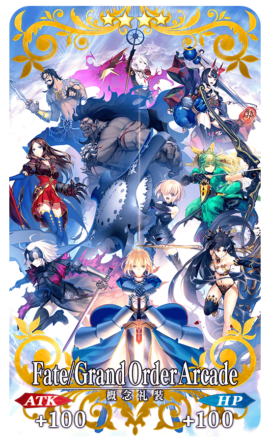
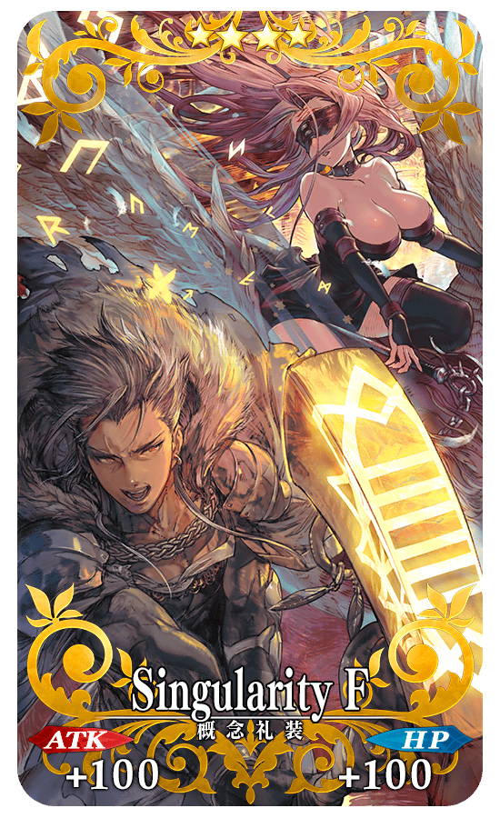
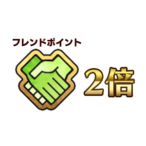

為了記念「Fate/Grand Order Arcade」的營運，舉辦「Fate/Grand Order Arcade」營運記念宣傳活動！
◆舉辦期間◆
2018年8月1日(三) AM9:00～9月1日(六) AM8:59
通過下述的期間中在迦勒底之門出現的「Fate/Grand Order Arcade」營運記念關卡，取得關卡限定的概念禮裝吧！
◆舉辦期間◆
2018年8月1日(三) AM9:00～9月1日(六) AM8:59
◆關卡開放條件◆
通過「特異點F 炎上汙染都市 冬木」的Master對象
◆「Fate/Grand Order Arcade」營運記念關卡限定概念禮裝◆
|  |
★★★★SR |
※請注意在「Fate/Grand Order Arcade」營運記念關卡沒有冒險部分。

為了記念「Fate/Grand Order Arcade」的營運，贈送風間雷太繪製的「店家來店特典」概念禮裝！
在宣傳活動對象店家起動「Fate/Grand Order」程式來取得吧！
◆宣傳活動對象店家一覧◆
https://arcade.fate-go.jp/locationcampaign/
※在對象店舖中，會有在宣傳活動開始時還沒開始營運的店家。
◆「店家來店特典」概念禮裝的入手期間◆
2018年8月1日(三) AM9:00～9月1日(六) AM8:59
◆領取條件◆
所有的Master對象
※新Master必須通過推進至「特異點F 炎上汙染都市 冬木 第3節」。
◆「店家來店特典」概念禮裝◆
|  |
★★★★SR |
可遊玩英靈召喚團隊戰鬥「Fate/Grand Order Arcade」鄰近的店家搜索，請自下述的URL確認。
https://arcade.fate-go.jp/location/


2018年8月1日(三) AM9:00～9月1日(六) AM8:59的舉辦期間中，在管理室(ターミナル)畫面左側會顯示「位置檢查(エリアチェック)」圖示。
在店家內確認通訊環境後，請將使用裝置的位置情報設定調為ON。
通訊狀態不穩和位置情報設定為OFF的情況，會無法順利入手「店家來店特典」的概念禮裝。
※訊號狀況、建物等障礙物等的影響，會有位置情報(GPS)產生誤差的可能性。
因此可能會已在舉辦區域內仍無法領取的情況，請嘗試稍微移動地點。
※領取「店家來店特典」的概念禮裝時，請務必在休息區進行。在機台前和通道等的操作會給其他人帶來麻煩，請注意絕對別進行。
※邊走邊使用智慧型手機會給其他行人帶來麻煩，非常危險請自制。關於在遊玩中發生事故和糾紛不會幫負任何責任。
※給店家內的客人和周圍店家等帶來麻煩的行為(佔座、大聲喧嘩、丟棄垃圾等)請自制。
※請注意在使用裝置沒有位置情報(GPS)設定的功能，無法領取「店家來店特典」。
【7月31日(二) 14:00追記】
關於使用裝置的位置情報設定調成ON的詳細方法請在此處的公告確認。
|
【7月31日(二) 14:00追記】 ◆舉辦期間◆ |
 |
◆對象Servant◆
| 職階 | 稀有度 | Servant名 |
|---|---|---|
| Saber | ★★★★★ | 阿爾托莉亞・潘德拉剛 |
| ★★★★ | 齊格飛 | |
| ★★★ | 蓋烏斯・尤利烏斯・凱撒 | |
| Archer | ★★★★ | 阿塔蘭塔 |
| ★★★★ | Emiya | |
| Lancer | ★★★★ | 伊莉莎白・巴托里 |
| ★★ | 雷奧尼達一世 | |
| Rider | ★★★★ | 瑪爾大 |
| ★★★ | 美杜莎 | |
| ★★ | 聖喬治 | |
| Caster | ★★★ | 庫・夫林 |
| ★ | 沃夫岡・阿瑪迪斯・莫札特 | |
| Assassin | ★★★★ | 卡米拉 |
| ★★ | 歌劇魅影 | |
| ★ | 瑪塔・哈里 | |
| Berserker | ★★★★★ | 弗拉德三世 |
| ★★★★ | 海克力斯 | |
| ★★★ | 清姬 | |
| ★★ | 卡利古拉 | |
| Shielder | ★★★ | 瑪琇・基利艾拉特 |
※請注意NPC Servant即使是對象Servant也在友情點數獲得量2倍的對象外。
【7月31日(二) 14:00追記】
下述的期間中，與「Fate/Grand Order Arcade」關連的Servant對象，幕間物語的AP消耗量變成1/2。
※請注意強化關卡、曜日關卡為對象外。
※在戰鬥中撤退的情況AP的消耗也是1/2。
◆舉辦期間◆
2018年8月1日(三) AM9:00～8月16日(四) 11:59
◆對象Servant(幕間物語)◆
| 職階 | 稀有度 | Servant名 |
|---|---|---|
| Saber | ★★★★★ | 阿爾托莉亞・潘德拉剛 |
| ★★★★ | 齊格飛 | |
| ★★★ | 蓋烏斯・尤利烏斯・凱撒 | |
| Archer | ★★★★ | 阿塔蘭塔 |
| ★★★★ | Emiya | |
| Lancer | ★★★★ | 伊莉莎白・巴托里 |
| ★★ | 雷奧尼達一世 | |
| Rider | ★★★★ | 瑪爾大 |
| ★★★ | 美杜莎 | |
| ★★ | 聖喬治 | |
| Caster | ★★★ | 庫・夫林 |
| ★ | 沃夫岡・阿瑪迪斯・莫札特 | |
| Assassin | ★★★★ | 卡米拉 |
| ★★ | 歌劇魅影 | |
| ★ | 瑪塔・哈里 | |
| Berserker | ★★★★★ | 弗拉德三世 |
| ★★★★ | 海克力斯 | |
| ★★★ | 清姬 | |
| ★★ | 卡利古拉 |
關於「Fate/Grand Order Arcade」營運記念初次登入獎勵的詳情請自下述橫幅確認。